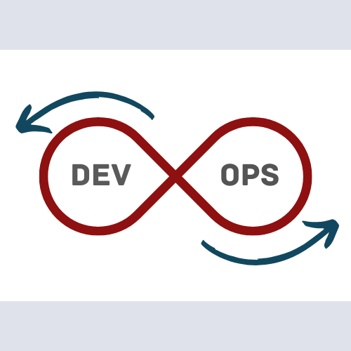
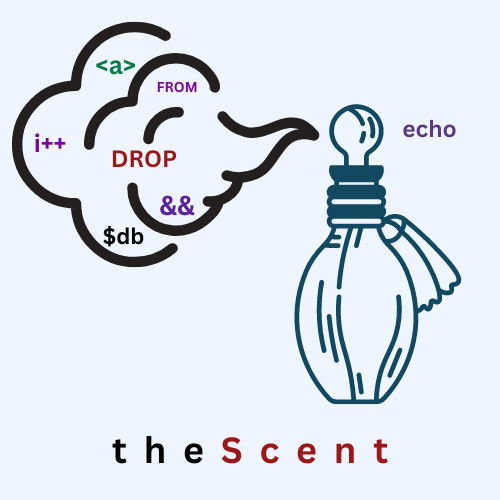
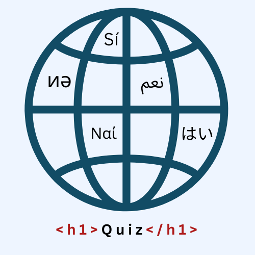

Hi, My name is Nabil Sabar
I am a Full-Stack Software Engineer
| Inc. UI/UX, Backend & DevOps Technologies
I am a Full-Stack Software Engineer
| Inc. UI/UX, Backend & DevOps Technologies
Welcome to my page! I'm Nabil Sabar. A Full-Stack Software Engineer
with a passion for managing the entire application lifecycle—from
coding and formatting to testing, debugging, and implementing
modern practices like DevOps to create production-ready
applications.
I specialise in developing structured, secure, and responsive
applications that deliver real value to users. For example, I have
worked on projects where I optimised performance and enhanced
security, resulting in better user experiences and smoother
deployment processes. With experience in flowchart-driven
documentation and a strong understanding of Agile methodologies
like Kanban and Scrum, I ensure effective project management and
collaboration within cross-functional teams.
Welcome to my page! I'm Nabil Sabar, A Full-Stack Software Engineer passionate about the complete application lifecycle. Here's an overview of what my coding work covers:

Technologies: React.js, Node.js, PostgreSQL, Linux, Cron, Docker, Docker Compose, Nginx, Prometheus, Grafana
A full-stack CRUD app was deployed on a self-hosted Ubuntu
server using Docker and Docker Compose for modular container
management. Nginx, secured with Let’s Encrypt, handled HTTPS and
reverse proxy duties for a production-ready setup.
Security was enforced with SSH key authentication and iptables,
while Bash scripts and Cron jobs automated backups. Prometheus
and Grafana enabled real-time monitoring and alerts for system
reliability.
Technologies: HTML5, CSS3, JavaScript, Bash Shell, Git, GitHub Actions, Mermaid, Kanban
Implemented DevOps practices for the development, version
control, and deployment of this website.
This website emphasizes user experience with favicons, CSS
animations, and hover effects. Chrome DevTools ensured precise
color coding and style formatting. JavaScript enabled smooth
scrolling for fluid navigation. Responsive design was achieved
using Flexboxes and media queries. Logos designed with Canva
added a polished visual touch.

Technologies: HTML5, CSS3, MySQL, PHP, Git
A perfume e-commerce website with a MySQL database managing
real-time inventory. Items are easily added to the cart with
automatic total calculation.
Product information links to stock and cart tables via foreign
keys, allowing admin staff to access perfume details with a
single click. This setup enhances inventory management and
improves customer service by ensuring that customers cannot
purchase items that are out of stock.

Technologies: React Vite, TypeScript, Tailwind CSS, Jest, React Testing Library, MySQL, PHP, Git
A dynamic single-page language quiz using asynchronous
programming, featuring user authentication, live scoring,
immediate feedback, and a custom loop and timeout system for
answer review.
An adaptive results page with personalized feedback based on
scores, automatic database updates for top scores, and a
leaderboard highlighting the top seven scores with gold, silver,
and bronze backgrounds for the top three.
HTML5
CSS3
JS ES2024
JS Legacy
PHP
MySQL
PostgreSQL
Python
Bootstrap
Git
GitHub Actions
Linux
React Vite
TypeScript
Jest
Tailwind CSS
Docker
Kanban
Scrum
VS Code
Jira
MS Teams
Slack
Markdown
Mermaid
Canva
Extended Diploma in Information Technology Level 3
(3 Distinctions)